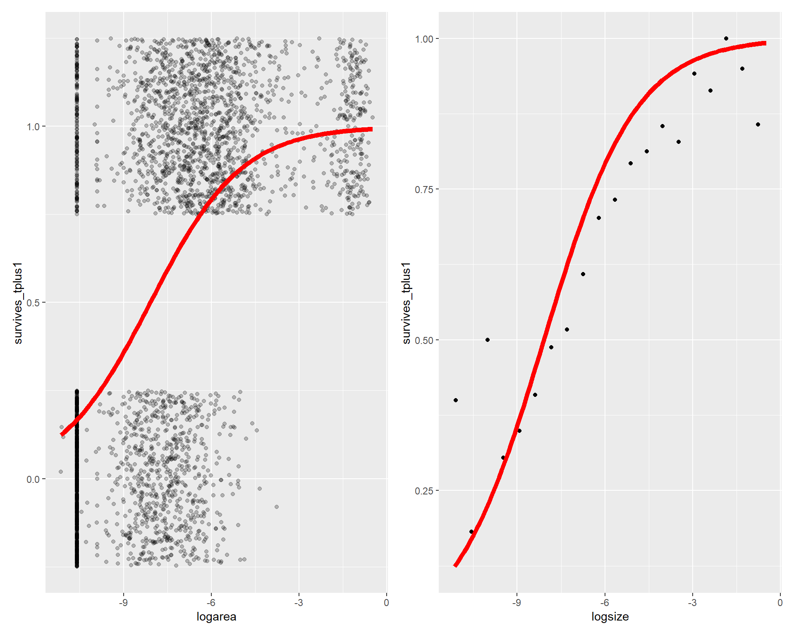

5 Adler Dataset: Extensions to the Mean IPM
In Chapter 4, we followed the workflow to produce the mean IPM from our example dataset, Bouteloua gracilis from the Colorado site of the Adler dataset. However, this dataset had the potential to create as many as 125 other IPMs which we did not explore! This document aims to show how we constructed IPMs for each specific yearly transition, and how we might approach incorporating different treatments into our IPMs.
This document assumes you have already read through Chapter 4, and only includes steps which deviate from the workflow described previously. If you are working with a similar dataset with hierarchical structure/nestedness, it would be a good idea to work out of a different subfolder in the overall R project to differentiate the mean model workflow from different workflows exploring levels of nestedness in the data.
5.1 Exploring our options
First, recall the 126 possible IPMs we could build from the Bouteloua gracilis dataset. We have 13 transitions (14 years) of data, across six pastures, each of which contained four plots with unique grazing treatments. In theory, we could construct the following IPMs:
- 1 IPM per transition, all plots aggregated (13 IPMs)
- 1 IPM using mean parameter values across all transitions and all plots (1 IPM) ← we did this in Chapter 4
- 1 IPM per transition, per treatment combination (13 x 4 = 52 IPMs)
- 1 IPM per treatment combination, using mean parameter values across all transitions (4 IPMs)
- 1 IPM per transition, per historical treatment, ignoring the current treatment (13 x 2 = 26 IPMs)
- 1 IPM per historical treatment, using mean parameter values across all transitions and ignoring the current treatment (2 IPMs)
- 1 IPM per transition, per current treatment, ignoring the historical treatment (13 x 2 = 26 IPMs)
- 1 IPM per current treatment, using mean parameter values across all transitions and ignoring the historical treatment (2 IPMs)
We could take this even further by incorporating the six different pastures as an added level of complexity; however, this random effect would certainly not have sufficient data to consider, so we will simply treat the different pastures as replicates of the different treatments.
Let’s also take a look again at this table, which describes the number of observations in each treatment for each year:| gzgz | gzun | ungz | unun | Total | |
|---|---|---|---|---|---|
| 1997 | 10 | 6 | 14 | 12 | 42 |
| 1998 | 16 | 8 | 15 | 19 | 58 |
| 1999 | 43 | 29 | 33 | 54 | 159 |
| 2000 | 43 | 5 | 20 | 16 | 84 |
| 2001 | 54 | 23 | 45 | 52 | 174 |
| 2002 | 123 | 22 | 65 | 724 | 934 |
| 2003 | 99 | 12 | 38 | 137 | 286 |
| 2004 | 118 | 18 | 53 | 94 | 283 |
| 2005 | 78 | 14 | 46 | 35 | 173 |
| 2006 | 67 | 10 | 104 | 52 | 233 |
| 2007 | 143 | 39 | 46 | 86 | 314 |
| 2008 | 134 | 50 | 64 | 94 | 342 |
| 2009 | 90 | 40 | 45 | 70 | 245 |
| 2010 | 71 | 29 | 53 | 67 | 220 |
| Total | 1089 | 305 | 641 | 1512 | 3547 |
Only a few treatment x year combinations have enough individuals for IPMs, and when we aggregate all individuals across all treatments, most years have sufficient individuals to construct IPMs (if only barely). Additionally, if we aggregate all individuals across all years for each treatment combination then all treatment combinations have sufficient individuals to construct IPMs. From our list above, we can then consider constructing 21 more IPMs:
- 1 IPM per transition, all plots aggregated (13 IPMs)
- 1 IPM per treatment combination, using mean parameter values across all transitions (4 IPMs)
- 1 IPM per historical treatment, using mean parameter values across all transitions and ignoring the current treatment (2 IPMs)
- 1 IPM per current treatment, using mean parameter values across all transitions and ignoring the historical treatment (2 IPMs)
We will follow a slightly modified workflow from Chapter 4, since we are already familiar with the data and the basic structure of the models. In Chapter 6, we will begin by introducing the random effect of year to the basic models we constructed in Chapter 4 to build 13 new IPMs, one for each transition. Then, in Chapter 7, we will introduce the treatments to the basic model to build eight new IPMs and examine the effect of the different levels of the grazing treatments on the population growth rate.
5.2 Plotting by year x treatment
Before we jump into the next models, let’s take a moment to explore the dataset a bit more in-depth than we have previously. We will start with the cleaned data, where we have updated the sizes of three individuals to no longer be smaller than the minimum size, since we already modified these data for the mean model.
library ( ggplot2 )
library( patchwork )
grow <- read.csv("https://raw.githubusercontent.com/aspen1030/RUPDemo/main/growth_df_mod.csv")
surv <- read.csv("https://raw.githubusercontent.com/aspen1030/RUPDemo/main/survival_df_mod.csv")
recr <- read.csv("https://raw.githubusercontent.com/aspen1030/RUPDemo/main/recruitment_df_mod.csv")
Bou_gra <- read.csv("https://raw.githubusercontent.com/aspen1030/RUPDemo/main/Bou_gra_clean.csv")When we created the mean model IPM, we aggregated all observations across year and treatment and created single plots for each vital rate. Let’s now examine plots showing the vital rate data for all year x treatment combinations, starting with survival.
First we will set up a function to calculate the binned data at the scale of every year x treatment combination:
df_binned_prop <- function(ii, df_in, n_bins, siz_var, rsp_var, grid_y_l){
# make sub-selection of data
df <- subset( df_in, Year == grid_y_l$Year[ii] &
Treatment == grid_y_l$Treatment[ii] )
if( nrow( df ) == 0 ) return( NULL )
size_var <- deparse( substitute( siz_var ) )
resp_var <- deparse( substitute( rsp_var ) )
# binned survival probabilities
h <- ( max(df[,size_var], na.rm = T ) - min( df[,size_var], na.rm = T ) ) / n_bins
lwr <- min( df[,size_var], na.rm = T ) + ( h * c( 0:( n_bins - 1 ) ) )
upr <- lwr + h
mid <- lwr + ( 1/2 * h )
binned_prop <- function( lwr_x, upr_x, response ){
id <- which( df[,size_var] > lwr_x & df[,size_var] < upr_x )
tmp <- df[id,]
if( response == 'prob' ){ return( sum( tmp[,resp_var], na.rm = T ) / nrow( tmp ) ) }
if( response == 'n_size' ){ return( nrow( tmp ) ) }
}
y_binned <- Map( binned_prop, lwr, upr, 'prob' ) %>% unlist
x_binned <- mid
y_n_size <- Map( binned_prop, lwr, upr, 'n_size' ) %>% unlist
# output data frame
data.frame( xx = x_binned,
yy = y_binned,
nn = y_n_size ) %>%
setNames( c( size_var, resp_var, 'n_size' ) ) %>%
mutate( Year = grid_y_l$Year[ii],
Treatment = grid_y_l$Treatment[ii] )
}Now, we need to use expand.grid( ) to create a dataframe of all year x treatment combinations that we can use as the input to the function we created:
grid_y_t <- expand.grid( Year = surv$Year %>% unique %>% sort,
Treatment = surv$Treatment %>% unique %>% sort,
stringsAsFactors = F )Then we use lapply( ) to apply our binning function across all treatment x year combinations:
surv_bin_t <- lapply( 1:nrow( grid_y_t ), df_binned_prop, Bou_gra, 10,
logsize, survives_tplus1, grid_y_t )And now we can create a big dataframe to plot the survival data in a large “panel plot”:
surv_t_pan_df <- bind_rows( surv_bin_t ) %>%
mutate( trt_lab = Treatment ) %>%
mutate( transition = paste( paste0( Year ),
substr( paste0( Year + 1 ), 3, 4 ),
sep = '-' ) ) %>%
mutate( year = as.integer( Year - 1996 ),
treatment = Treatment %>% as.factor %>% as.integer )
ggplot( data = surv_t_pan_df, aes( x = logsize, y = survives_tplus1 ) ) +
geom_point( alpha = 1,
pch = 16,
size = 0.7,
color = 'red') +
scale_y_continuous( breaks = c( 0.1, 0.5, 0.9 ) ) +
# split in panels
facet_grid( trt_lab ~ transition ) +
theme_bw( ) +
theme( axis.text = element_text( size = 8 ),
title = element_text( size = 10 ),
strip.text.y = element_text( size = 8,
margin = margin( 0.5, 0.5, 0.5, 0.5,
'mm') ),
strip.text.x = element_text( size = 8,
margin = margin( 0.5, 0.5, 0.5, 0.5,
'mm') ),
strip.switch.pad.wrap = unit( '0.5', unit='mm' ),
panel.spacing = unit( '0.5', unit='mm' ) ) +
labs( x = expression( 'log(size)'[t0] ),
y = expression( 'Survival to time t1' ) )At this scale, it’s kinda hard to tell what’s going on. The deficit of data we noticed in the first few years combined with the unequal amount of datapoints in each treatment makes the data fairly noisy in certain years. Even though the data indicate that there might be a significant year x treatment effect in the model, we do not have sufficient data to model this effect.
Now we will look at the growth data. First we need to create the appropriate dataframe to make a “panel plot” like we did with the survival data:
grow_t_pan_df <- grow %>%
mutate( trt_lab = Treatment ) %>%
mutate( transition = paste( paste0( Year ),
substr( paste0( Year + 1 ), 3, 4 ),
sep = '-' ) ) %>%
mutate( year = as.integer( Year - 1996 ),
treatment = Treatment %>% as.factor %>% as.integer )Let’s take a look at the panel plot:
ggplot(data = grow_t_pan_df, aes( x = logsize, y = log( size_tplus1 ) ) ) +
geom_point( alpha = 1,
pch = 16,
size = 0.7,
color = 'red' ) +
# split in panels
facet_grid( trt_lab ~ transition ) +
theme_bw( ) +
theme( axis.text = element_text( size = 8 ),
title = element_text( size = 10 ),
strip.text.y = element_text( size = 8,
margin = margin( 0.5, 0.5, 0.5, 0.5,
'mm' ) ),
strip.text.x = element_text( size = 8,
margin = margin( 0.5, 0.5, 0.5, 0.5,
'mm' ) ),
strip.switch.pad.wrap = unit( '0.5', unit = 'mm' ),
panel.spacing = unit( '0.5', unit = 'mm' ) ) +
labs( x = expression( 'log( size )'[t0] ),
y = expression( 'log( size )'[t1] ) )
As with the survival data, the deficit of data in the earlier years and the difference in the number of datapoints across treatments is fairly apparent in this plot. Any effect of year x treatment might simply be due to the different sample sizes, and may not actually reflect any biological processes.
Now we should look at the recruitment data. We will plot the number of adults at time t0 on the x axis, and the number of recruits at time t1 on the y axis. First we need to create the dataframe for a “panel plot” like we did with the survival and growth data:
recr$Treatment <- substr( recr$Quad, 1, 4 )
indiv_yr_trt <- surv %>%
group_by( Quad ) %>%
count( Year ) %>%
rename( n_adults = n ) %>%
mutate( Year = Year + 1 )
recr_trt <- recr %>%
left_join( indiv_yr_trt ) %>%
drop_na## Joining with `by = join_by(Quad, Year)`recr_t_pan_df <- recr_trt %>%
mutate( trt_lab = Treatment ) %>%
mutate( transition = paste( paste0( Year ),
substr( paste0( Year + 1 ), 3, 4 ),
sep = '-' ) ) %>%
mutate( year = as.integer( Year - 1996 ),
treatment = Treatment %>% as.factor %>% as.integer )And now the panel plot (dropping that one outlier with over 600 individuals in a single plot so we can actually view the data):
recr_t_pan_df %>%
filter( n_adults < 600 ) %>%
filter( NRquad < 600 ) %>%
ggplot( aes( x = n_adults, y = NRquad ) ) +
geom_point( alpha = 1,
pch = 16,
size = 0.7,
color = 'red' ) +
# split in panels
facet_grid( trt_lab ~ transition ) +
theme_bw( ) +
theme( axis.text = element_text( size = 8 ),
title = element_text( size = 10 ),
strip.text.y = element_text( size = 8,
margin = margin( 0.5, 0.5, 0.5, 0.5,
'mm' ) ),
strip.text.x = element_text( size = 8,
margin = margin( 0.5, 0.5, 0.5, 0.5,
'mm' ) ),
strip.switch.pad.wrap = unit( '0.5', unit = 'mm' ),
panel.spacing = unit( '0.5', unit = 'mm' ) ) +
labs( x = "Number of adults at time t0",
y = "Number of recruits at time t1" )As with the survival and growth data, there seems to be differences in the recruitment data across the different year x treatment combinations, but again, it is difficult to discern any prominent patterns.
Considering these three plots, we can see how fitting models that consider both the effects of year and treatment might result in overconfident predictions, due to the considerable inconsistency in the number of observations across each treatment x year combination. However, if we had found noticeable differences in the patterns of any of the vital rate data across each treatment x year, this might provide an opportunity to continue exploring the data or consider other ways to model the vital rates. Taking a moment to plot every combination of treatments and years can be a valuable exercise in understanding the data you are working with, and hopefully this chapter can provide a framework of example code to produce similar graphs in your own projects.